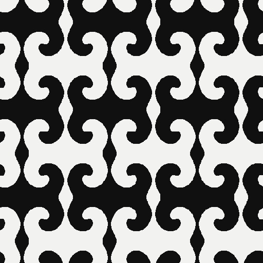
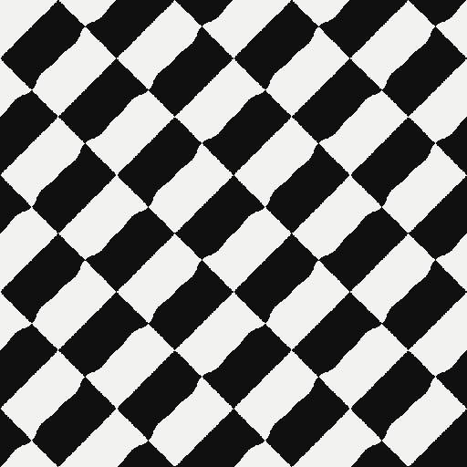

◦ p1
Only slides, and that is the point: with no point symmetry to lean on, the two colours are carried onto each other by a half-cell slide or by half a period alone. The catalog holds 13 saved fields under a p1 film group, read 66 different ways: 12 where the operation s is itself a spacetime symmetry of the wave — so s and the half-period wait are two names for one antisymmetry — 42 where s is free, and 12 plain thresholds to compare them with. Separately measured: 20 of the 66 exchange the two inks after half a period exactly.
1 · The film group
Each tile is a p1 film group — the same wallpaper group with a different assignment of time shifts to its operations — and counts the distinct pictures the catalog holds under it. A field filed under more than one film group appears under each.
2 · The rule that makes two colours
Loading catalog…

Plume Monochrome — “the wave”the first of these pictures, on its own endless page · 16 + 16
Weave Monochrome — “the weave”the same rule on a woven sibling · 32 + 32Loading saved catalog…
Parameters, thumbnails and the measured two-colour tables are precomputed.
The marks are off on every animation on this site. Tick the box, or press G, to draw the operations of the two-colour group over the picture.
The measured two-colour group — …
| Operation | Wait | Colours | Residual |
|---|
Numerical record
Only pictures whose two-colour law was re-derived from the saved bytes at every node-frame appear here.
All 17 wallpaper groups · The same fields in ember (p1) · Weave Monochrome · Plume Monochrome · Entangled colourings · How the patterns are computed